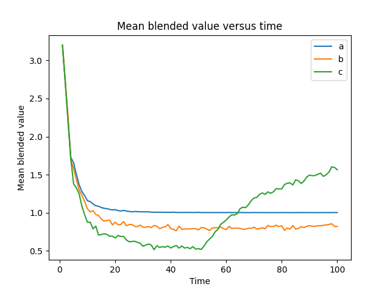

Reference¶
PyIBL is an implementation of a subset of Instance Based Learn Theory (IBLT). The
principle class is Agent, an instance of which is a cognitive entity learning and
making decisions based on its experience from prior decisions, primarily by calls to its
choose() and respond() methods. The decisions an agent is choosing
between can be further decorated with information about their current state. There are
facilities for inspecting details of the IBL decision making process programmatically
facilitating debugging, logging and fine grained control of complex models.
- class pyibl.Agent(attributes=[], name=None, noise=0.25, decay=0.5, temperature=None, mismatch_penalty=None, optimized_learning=False, default_utility=None, default_utility_populates=False, fixed_noise=False)¶
A cognitive entity learning and making decisions based on its experience from prior decisions. The main entry point to PyIBL. An Agent has a name, a string, which can be retrieved with the
nameproperty. The name cannot be changed after an agent is created. If, when creating an agent, the name argument is not supplied or isNone, a name will be created of the form'Anonymous-Agent-n', where n is a unique integer.An
Agentalso has zero or more attributes, named by strings. The attribute names can be retrieved with theattributesproperty, and cannot be changed after an agent is created. Attribute names must be non-empty strings. The value of attributes, if present, should be anIterableof strings. As a convenience if none of the attribute names contain spaces or commas a string consisting of the names, separated by commas or spaces may be used instead of a list.The agent properties
noise,decay,temperature,mismatch_penalty,optimized_learning,default_utility,default_utility_populatesandfixed_noisecan be initialized when creating an Agent.- name¶
The name of this Agent. It is a string, provided when the agent was created, and cannot be changed thereafter.
- attributes¶
A tuple of the names of the attributes included in all situations associated with decisions this agent will be asked to make. These names are assigned when the agent is created and cannot be changed, and are strings. The order of them in the returned tuple is the same as that in which they were given when the agent was created.
- choose(choices=None, details=False)¶
- Selects which of the choices is expected to result in the largest payoff, and returns it.
The expected form of the choices depends upon whether or not this
Agenthas any attributes or not. If it does not, each of the choices should be aHashablethat is notNone, representing an atomic choice; if any of the choices are not hashable or areNoneaValueErroris raised.If this
Agentdoes have attributes (that is, the attributes argument was supplied and non-empty when it was created, or, equivalently, the value of theattributesproperty is a non-empty list), then each of the choices can be either aMapping, typically adict, mapping attribute names to their values, or aSequence, typically alist, containing attribute values in the order they were declared when thisAgentwas created and would be returned byattributes. Attributes not present (either there is no key in theMapping, or aSequenceshorter than the number of attributes) have a value of None, while values not corresponding to attributes of theAgent(either a key in theMappingthat does not match an attribute name, or aSequencelonger than the number of attributes) are ignored. Whether aMappingor aSequence, all the attribute values must beHashable, and are typically strings or numbers. If any of the choices do not have one of these forms aValueErroris raised.In either case, if any pair of the choices duplicate each other, even if of different forms (e.g. dictionary versus list), and after adding default
Nonevalues and removing ignored values, aValueErroris raised.It is also possible to supply no choices, in which case those used in the most recent previous call to this method are reused. If there was no such previous call since the last time this
Agentwasreset()aValueErroris raised.For each of the choices this method finds all instances in memory that match, and computes their activations at the current time based upon when in the past they have been seen, modified by the value of the
decayproperty, and with noise added as controlled by thenoiseproperty. If partial matching has been enabled withmismatch_penaltysuch matching instances need not match exactly, and the similarities modified by the mismatch penalty are subtracted from the activations. If partial matching is not enabled only those instances that match exactly are consulted. “Exact” matches are based on Python’s==operator, notis. Thus, for example0,0.0andFalseall match one another, as do1,1.0andTrue.Looking at the activations of the whole ensemble of instances matching a choice a retrieval probability is computed for each possible outcome, and these are combined to arrive at a blended value expected for the choice. This blending operation depends upon the value of the
temperatureproperty; if none is supplied a default is computed based on the value of thenoiseparameter. The value chosen and returned is that element of choices with the highest blended value. In case of a tie one will be chosen at random.After a call to
choosea corresponding call must be made torespond()before callingchoose()again, or aRuntimeErrorwill be raised.If the details argument is also supplied and is
Truetwo values are returned as a 2-tuple, the first as above and the second containing data used to arrive at the selection. While the comparison of blended values used bychoose()is the appropriate process for most models, for some specialized purposes the modeler may wish to implement a different decision procedure. This additional information, when combined with supplying a second argment torespond(), facilitates the construction of such more complicated models.The second return value is a list of dicts, one for each choice. These dicts have entries for the choice, the blended value, and a list of retrieval probability descriptions. The retrieval probability descriptions are themselves dicts, one for each instance consulted in constructing the given choice’s blended value. Each of these latter dicts has two entries, one for the utility stored in the instance and the other its probability of retrieval.
Because of noise the results returned by
chooseare stochastic, so the results of running the following examples may differ in their details from those shown.
>>> from pprint import pp >>> a = Agent(name="Button Pusher", default_utility=10) >>> a.choose(["left", "right"]) 'left' >>> a.respond(5) >>> a.choose() 'right' >>> a = Agent(["species", "state"], "Pet Shop") >>> a.populate([["parrot", "dead"]], 0) >>> a.populate([["parrot", "squawking"]], 10) >>> a.choose([["parrot", "dead"], ["parrot", "squawking"]]) ['parrot', 'squawking'] >>> a = Agent(name="Cheese Shop") >>> a.populate(["Tilset", "Wensleydale"], 10) >>> a.choose(["Tilset", "Wensleydale"]) 'Tilset' >>> a.respond(1) >>> choice, data = a.choose(["Tilset", "Wensleydale"], details=True) >>> choice 'Wensleydale' >>> pp(data) [{'choice': 'Wensleydale', 'blended_value': 10.0, 'retrieval_probabilities': [{'utility': 10, 'retrieval_probability': 1.0}]}, {'choice': 'Tilset', 'blended_value': 2.1449539686120187, 'retrieval_probabilities': [{'utility': 10, 'retrieval_probability': 0.12721710762355765}, {'utility': 1, 'retrieval_probability': 0.8727828923764424}]}]
- respond(outcome=None, choice=None)¶
Provide the outcome resulting from the most recent decision selected by
choose(). The outcome should be a real number, where larger numbers are considered “better.” This results in the creation or reinforcemnt of an instance in memory for the decision with the given outcome, and is the fundamental way in which the PyIBL model “learns from experience.”By default the choice selected by
choose()is the one to which the outcome is attached. In unusual cases, however, the modeler may prefer to select a different choice; for example, if using a different decision procedure based on the information returned by aTruevalue of the second argument toChoose(), or if performing model tracing of an individual human’s behavior on the experiment being modeled. To support these unusual cases a second argument may be passed torespond(), which is the choice to actually be made. If it is not one of the choices provided in the original call tochoose()aValueErroris raised.It is also possible to delay feedback, by calling
respond()without arguments, or with the first argument beingNone. This tells theAgentto assume it has received feedback equal to that it expected, that is, the blended value resulting from past experiences. In this caserespond()returns a value, aDelayedResponeobject, which can be used subsequently to update the response.Warning
Delayed feedback is an experimental feature and care should be exercised in its use to avoid biologically implausible models.
If there has not been a call to
choose()since the last timerespond()was called aRuntimeErroris raised. If outcome is neitherNonenor a real number aValueErroris raised.
- populate(choices, outcome, when=None)¶
Adds instances to memory, one for each of the choices, with the given outcome, at the current time, without advancing that time. The outcome should be a
Realnumber. The choices are as described inchoose(). If provided, when should be a time, a dimensionless quantity, typically a count of the number of choose/respond cycles that have occurred since the agent was created or lastreset(); providing time will cause the instances to be added at that specified time instead of the current time. The time provided may not be in the future.This is typically used to enable startup of a model by adding instances before the first call to
choose(). When used in this way the timestamp associated with this occurrence of the instance will be zero. Subsequent occurrences are possible ifrespond()is called with the same outcome afterchoose()has returned the same decision in the same situation, in which case those reinforcing occurrences will have later timestamps. An alternative mechanism to facilitate sartup of a model is setting thedefault_utilityproperty of the agent. While rarely done, a modeler can even combine the two mechanisms, if desired.It is also possible to call
populate()after choose/respond cycles have occurred. In this case the instances are added with the current time as the timestamp. This is one less than the timestamp that would be used were an instance to be added by being experienced as part of a choose/respond cycle instead. Each agent keeps internally a clock, the number of choose/respond cycles that have occurred since it was created or lastreset(). Whenchoose()is called it advances that clock by one before computing the activations of the existing instances, as it must since the activation computation depends upon all experiences having been in the past. That advanced clock is the timestamp used when an instance is added or reinforced byrespond().The when argument, which if provided should be a time, can be used to add instances at other times.
Raises a
ValueErrorif outcome is not aRealnumber, if any of the choices are malformed or duplicates, or if when is in the future.Warning
In normal use you should only call
populate()before any choose/respond cycles. If, for exotic purposes, you do wish to call it after, caution should be exercised to avoid biologically implausible models. It should not normally be necessary to use the when argument, which is provided only for esoteric uses. In particular instances may not be added in the future, as that would result in tears as operations such aschoose()will raise anException.
- default_utility¶
The utility, or a function to compute the utility, if there is no matching instance. If when
choose()is called, for some choice passed to it there is no existing instance that matches the choice the value of this property is consulted. Note that an instance added withpopulate()counts as matching, and will prevent the interrogation of this property. If partial matching (mismatch_penalty) is enabled, any instance that even partially matches a choice will prevent the iterrogation of this property.Warning
It is rarely appropriate to use
default_utilitywhen partial matching is being used. If they are used together thedefault_utilitywill only be applied the first time a relevant choice is made, as all subsequent choices will partially match. This generally gives unpredicatable results and is rarely useful. Instead, when using partial matching it is usually better to explicitly prepopulate appropriate instances usingpopulate().The value of this property may be a
Real, in which case when needed it is simply used as the default utility. If it is not a Real, it is assumed to be a function that takes one argument, one of the choices passed tochoose(). When a default utility is needed that function will be called, passing the choice in question to it, and the value returned, which should be a Real, will be used. If at that time the value is not a function of one argument, or it does not return a Real, aRuntimeErroris raised.The
default_utility_populatesproperty, which isFalseby default, controls whether or not an instance is added for each interrogation of thedefault_utilityproperty. If an instance is added, it is added as bypopulate()at the current time.Setting
default_utilitytoNoneorFalse(the initial default) causes no default utility to be used. In this case, ifchoose()is called for a decision in a situation for which there is no instance available, aRuntimeErroris raised.
- default_utility_populates¶
Whether or not a default utility provided by the
default_utilityproperty is also entered as an instance in memory. This property has no effect if default_utility has been set toNoneorFalse.
- reset(preserve_prepopulated=False)¶
Erases this agent’s memory and resets its time to zero. If it is
Trueit deletes all those not created at time zero. IBLT parameters such asnoiseanddecayare not affected. IfFalseany prepopulated instances, including those created automatically if adefault_utilityis provided anddefault_utility_populatesisTrueare removed, but the settings of those properties are not altered.
- time¶
This agent’s current time. Time in PyIBL is a dimensionless quantity, typically just counting the number of choose/respond cycles that have occurred since the Memory was last
reset().
- advance(increment=1, target=None)¶
Advances the time of this agent by increment time steps. The increment, which defaults to
1, should be a non-negative integer; if it is not aValueErroris raised.If target is provided instead of increment, it should be the future time to which to advance. If both target and increment are supplied the time is set to the later of target and the current time advanced by increment.
Returns the updated
time.A
ValueErroris raised if it is in the past or is not a non-negative integer.
- noise¶
The amount of noise to add during instance activation computation. This is typically a positive, possibly floating point, number between about
0.2and0.8. It defaults to0.25. If explicitly zero, no noise is added during activation computation. SettingnoisetoNoneorFalseis equivalent to setting it to zero.If an explicit
temperatureis not set, the value ofnoiseis also used to compute a default temperature for the blending operation on result utilities.Attempting to set
noiseto a negative number raises aValueError.
- decay¶
Controls the rate at which activation for previously experienced instances in memory decay with the passage of time. Time in this sense is dimensionless, and simply the number of choose/respond cycles that have occurred since the agent was created or last
reset(). Thedecayis typically between about0.1to about2.0. The default value is0.5. If zero memory does not decay. SettingdecaytoNoneorFalseis equivalent to setting it to zero. Thedecaymust be less than1if thisAgentis usingoptimized_learning. Attempting to setdecayto a negative number raises aValueError.
- temperature¶
The temperature parameter used for blending values. If
None, the default, the square root of2times the value ofnoisewill be used. If the temperature is too close to zero, which can also happen if it isNoneand thenoiseis too low, or negative, aValueErroris raised.
- mismatch_penalty¶
The mismatch penalty applied to partially matching values when computing activations. If
Noneno partial matching is done. Otherwise any defined similarity functions (seesimilarity()) are called as necessary, and the resulting values are multiplied by the mismatch penalty and subtracted from the activation. For any attributes and decisions for which similarity functions are not defined only instances matching exactly on these attributes or decisions are considered.Attempting to set this parameter to a value other than
Noneor a non-negative real number raises aValueError.
- similarity(attributes=None, function=None, weight=None)¶
Assigns a function and/or corresponding weight to be used when computing the similarity of attribute values. The attributes are names of attributes of the
Agent. The value of attributes, if present, should be anIterableof strings. As a convenience if none of the attribute namess contain spaces or commas a string consisting of the names, separated by commas or spaces may be used instead of a list. For anAgentthat has no attributes the attributes argument should be empty or omitted.The function argument should be a
Callable, taking two arguments, orTrue. The similarity value returned should be a real number between zero and one, inclusive. IfTrueis passed as the value of function a default similarity function is used which returns one if its two arguments are==and zero otherwise. If, when called, the function returns a number outside that range aRuntimeErroris raised. If, when the similarity function is called, the return value is not a real number aValueErroris raised.The weight should be a positive, real number, and defaults to one.
Similarity functions are only called when the Agent has a
mismatch_penaltyspecified. When a similarity function is called it is passed two arguments, attribute values to compare. The function should be commutative; that is, if called with the same arguments in the reverse order, it should return the same value. It should also be stateless, always returning the same values if passed the same arguments. If either of these constraints is violated no error is raised, but the results will, in most cases, be meaningless.If one of function or weight is omitted but the other is supplied, the supplied item is set with the omitted one unchanged. If called with neither function nor weight the similarity function is removed.
In the following examples the height and width are assumed to range from zero to ten, and similarity of either is computed linearly, as the difference between them normalized by the maximum length of ten. The colors pink and red are considered 50% similar, and all other color pairs are similar only if identical, with the similarity weighted half as much as the usual default.
>>> a.similarity(["height", "width"], lambda v1, v2: 1 - abs(v1 - v2) / 10) >>> def color_similarity(c1, c2): ... if c1 == c2: ... return 1 ... elif c1 in ("red", "pink") and c2 in ("red", "pink"): ... return 0.5 ... else: ... return 0 ... >>> a.similarity("color", color_similarity, 0.5)
- optimized_learning¶
Whether or not this
Agentuses the optimized learning approximation when computing instance activations. IfFalse, the default, optimized learning is not used. IfTrueis is used for all cases. If a positive integer, that number of the most recent rehearsals of an instance are used exactly, with any older rehearsals having their contributions to the activation approximated.Optimized learning can only be used if the
decayis less than one. Attempting to set this parameter toTrueor an integer whendecayis one or greater raises aValueError.The value of this attribute can only be changed when the
Agentdoes not contain any instances, typically immediately after it is created orreset(). Otherwise aRuntimeErroris raised.Warning
Care should be taken when adjusting the
timemanually and using optimized learning as operations that depend upon activation may no longer raise an exception if they are called whenadvancehas not been called after an instance has been created or reinforced, producing biologically implausible results.
- discrete_blend(outcome_attribute, conditions)¶
Returns the most likely to be retrieved, existing value of outcome_attribute subject to the conditions. That is, the existing value from the instances in this
Agentsuch that the likelihood one of those instances will be retrieved weighted by their probabilities of retrieval. The outcome_attribute should an attribute name in thisAgent. The conditions should be aMappingmapping attribute names to values, like the various choices provided tochoose(). Also returns a second value, a dictionary mapping possible values of outcome_attribute to their probabilities of retrieval.This method can be useful for building specialized models using schemes that do not correspond to the paradigm exposed by the usual
choose/respondcycles.
- instances(file=<_io.TextIOWrapper name='<stdout>' mode='w' encoding='utf-8'>, pretty=True)¶
Prints or returns all the instances currently stored in this
Agent. If file isNonea list of dictionaries is returned, each corresponding to an instance. If file is a string it is taken as a file name, which is opened for writing, and the results printed thereto; otherwise file is assumed to be an open, writablefile. By default the file is standard out, typically resulting in the instances being printed to the console.When printing to a file if pretty is true, the default, a format intended for reading by humans is used. Otherwise comma separated values (CSV) format, more suitable for importing into spreadsheets, numpy, and the like, is used.
- details¶
A
MutableSequenceinto which details of this Agent’s internal computations will be added. IfNone, the default, such details are not accumulated. It can be explicitly set to aMutableSequenceof the modeler’s choice, typically a list, into which details are accumulated. Setting it toTruesets the value to a fresh, empty list, whose value can be ascertained by consulting the value ofdetails.Warning
In complex models, or models with many iterations, the
detailscan gather a lot of information quickly. It is often best toclear()or otherwise reset thedetailsfrequently.A
ValueErroris raised if an attempt is made to set its value to anything other thanNone,Trueor aMutableSequence.>>> from pprint import pp >>> a = Agent(default_utility=10, default_utility_populates=True) >>> a.choose(["a", "b", "c"]) 'c' >>> a.respond(5) >>> a.details = True >>> a.choose() 'a' >>> pp(a.details) [[{'decision': 'a', 'activations': [{'name': '0000', 'creation_time': 0, 'attributes': (('_utility', 10), ('_decision', 'a')), 'references': (0,), 'base_activation': -0.3465735902799726, 'activation_noise': -0.1925212278297397, 'activation': -0.5390948181097123, 'retrieval_probability': 1.0}], 'blended': 10.0}, {'decision': 'b', 'activations': [{'name': '0001', 'creation_time': 0, 'attributes': (('_utility', 10), ('_decision', 'b')), 'references': (0,), 'base_activation': -0.3465735902799726, 'activation_noise': -0.21036659990743722, 'activation': -0.5569401901874098, 'retrieval_probability': 1.0}], 'blended': 10.0}, {'decision': 'c', 'activations': [{'name': '0002', 'creation_time': 0, 'attributes': (('_utility', 10), ('_decision', 'c')), 'references': (0,), 'base_activation': -0.3465735902799726, 'activation_noise': -0.0970213443277114, 'activation': -0.44359493460768396, 'retrieval_probability': 0.16296805894917318}, {'name': '0003', 'creation_time': 1, 'attributes': (('_utility', 5), ('_decision', 'c')), 'references': (1,), 'base_activation': 0.0, 'activation_noise': 0.1349273092778319, 'activation': 0.1349273092778319, 'retrieval_probability': 0.8370319410508268}], 'blended': 5.814840294745866}]]
- trace¶
A boolean which, if
True, causes theAgentto print details of its computations to standard output. Intended for use as a tool for debugging models. By default it isFalse.The output is divided into blocks, the first line of which describes the choice being described and the blended value of its outcome. This is followed by a tabular description of various intermediate values used to arrive at this blended value.
>>> a = Agent(default_utility=10, default_utility_populates=True) >>> a.choose(["a", "b", "c"]) 'b' >>> a.respond(5) >>> a.choose() 'a' >>> a.respond(7.2) >>> a.choose() 'c' >>> a.respond(2.3) >>> a.choose() 'a' >>> a.respond(7.2) >>> a.trace = True >>> a.choose() a → 7.214829206137316 @ time=5 +------+----------+---------+-------------+---------+---------------------+---------------------+---------------------+---------------------+-----------------------+ | id | decision | created | occurrences | outcome | base activation | activation noise | total activation | exp(act / temp) | retrieval probability | +------+----------+---------+-------------+---------+---------------------+---------------------+---------------------+---------------------+-----------------------+ | 0006 | a | 0 | [0] | 10 | -0.8047189562170503 | 0.23439403910287038 | -0.5703249171141799 | 0.19926444531722448 | 0.00529614504904138 | | 0010 | a | 2 | [2, 4] | 7.2 | 0.45574639440832615 | 0.8249453921296758 | 1.2806917865380019 | 37.425166810260265 | 0.9947038549509586 | +------+----------+---------+-------------+---------+---------------------+---------------------+---------------------+---------------------+-----------------------+ b → 8.633125874767709 @ time=5 +------+----------+---------+-------------+---------+---------------------+----------------------+---------------------+----------------------+-----------------------+ | id | decision | created | occurrences | outcome | base activation | activation noise | total activation | exp(act / temp) | retrieval probability | +------+----------+---------+-------------+---------+---------------------+----------------------+---------------------+----------------------+-----------------------+ | 0007 | b | 0 | [0] | 10 | -0.8047189562170503 | -0.16726717777620997 | -0.9719861339932603 | 0.063979539230306 | 0.7266251749535416 | | 0009 | b | 1 | [1] | 5 | -0.6931471805599453 | -0.6244610552806152 | -1.3176082358405605 | 0.024070725797184517 | 0.27337482504645844 | +------+----------+---------+-------------+---------+---------------------+----------------------+---------------------+----------------------+-----------------------+ c → 5.881552425492787 @ time=5 +------+----------+---------+-------------+---------+---------------------+--------------------+----------------------+--------------------+-----------------------+ | id | decision | created | occurrences | outcome | base activation | activation noise | total activation | exp(act / temp) | retrieval probability | +------+----------+---------+-------------+---------+---------------------+--------------------+----------------------+--------------------+-----------------------+ | 0008 | c | 0 | [0] | 10 | -0.8047189562170503 | 0.5923008644042377 | -0.21241809181281257 | 0.548367776208054 | 0.4651366786354268 | | 0011 | c | 3 | [3] | 2.3 | -0.3465735902799726 | 0.1835398166993702 | -0.1630337735806024 | 0.6305712354751412 | 0.5348633213645733 | +------+----------+---------+-------------+---------+---------------------+--------------------+----------------------+--------------------+-----------------------+ 'b'
- aggregate_details¶
A Pandas DataFrame aggregating information about the computations performed by this Agent. Set to
Trueto begin aggregating information, or toFalse(the default) to not collect this information. If already collecting information setting this toTruewill clear the already gathered information and start over.This collecting of information is most useful if the Agent is used in a common pattern: a number of rounds of a task are performed, each round a choose/respond cycle, and this sequence of rounds is repeated over a number of distinct, virtual participants,
reset()being called between each participant.Each row of the resulting DataFrame corresponds to the state of one of the instances in the Agent at a particular time for a particular virtual participant. The columns in the DataFrame are
iterationthe number of times
reset()has been called before recording the data in this row, which is typically an identifier for the virtual participanttimethe
timein this Agent at which the data in this row was recorded, typically the round of the taskchoicethe choice made in this round; if this Agent has attributes, the choice will be a tuple containing the values of the attributes in the order in which the attributes were declared when creating the Agent
utilitythe utility in this instance
optionthe option in this instance; note that this typically differs from the choice column as the choice is the choice made at this time while the option is the option in this instance, whether or not this instance contributed to the “winning” choice; however, as with choice, if the Agent was defined to have attributes the value in this column will be a tuple listing the values of those attributes in the order provided when the Agent was defined
blended_valuethe blended value computed for the option in this instance at this time; note that the same blended value is reported for each row corresponding to an instance with the same option at the same time and iteration
retrieval_probabilitythe probability of retrieval of this instance at this time
activationthe activation of this instance at this time
base_level_activationthe base level term of the activation computation at this time
activation_noisethe noise term of the activation computation at this time
If partial matching was used at least once in this Agent since the aggregate details started being record there will be additional columns following those above. The first,
mismatch, is the total mismatch penalty for this instance for this query. After this there is one column for each attribute that was partially matched, the similarity value computed for this attribute.Note that each time the
aggregate_detailsattribute is queried a new DataFrame is created from an internal data structure. If you wish to modify a DataFrame and have those changes retained you need to retain this DataFrame.Warning
Collecting
aggregate_detailsincurs costs, both in space and time, and for large, complex models some thought may be needed to balance these costs against the value and convenience of the results.>>> a = Agent() >>> a.aggregate_details = True >>> a.populate(["a", "b"], 2.2) >>> for participant in range(100): a.reset(True) for round in range(60): choice = a.choose(["a", "b"]) if choice == "a": a.respond(1) else: a.respond(2 if random.random() < 0.5 else 0) >>> a.aggregate_details iteration time choice utility option blended_value retrieval_probability activation base_level_activation activation_noise 0 1 1 a 2.2 a 2.200000 1.000000 0.091998 0.000000 0.091998 1 1 1 a 2.2 b 2.200000 1.000000 -0.233124 0.000000 -0.233124 2 1 2 b 1.0 a 1.479895 0.600088 -0.390199 0.000000 -0.390199 3 1 2 b 2.2 b 2.200000 1.000000 0.185066 -0.346574 0.531639 4 1 3 b 1.0 a 1.261019 0.782484 -0.352501 -0.346574 -0.005927 5 1 3 b 2.0 b 2.004449 0.977755 0.321220 0.000000 0.321220 6 1 4 b 1.0 a 1.026956 0.977537 -0.250698 -0.549306 0.298608 7 1 4 b 2.0 b 2.010839 0.945803 0.507820 0.534800 -0.026980 8 1 5 b 1.0 a 1.053339 0.955551 0.111650 -0.693147 0.804797 9 1 5 b 0.0 b 1.662770 0.169062 -0.211333 0.000000 -0.211333 ... ... ... ... ... ... ... ... ... ... ... 11990 100 56 b 1.0 a 1.000052 0.999956 2.261437 2.175180 0.086257 11991 100 56 b 2.0 b 1.366890 0.683311 0.762205 0.813690 -0.051485 11992 100 57 a 1.0 a 1.000002 0.999998 2.427721 2.088158 0.339563 11993 100 57 a 2.0 b 0.422011 0.210943 0.814716 0.783826 0.030889 11994 100 58 b 1.0 a 1.000018 0.999985 2.148301 2.153508 -0.005207 11995 100 58 b 2.0 b 1.733465 0.866600 1.085368 0.756193 0.329175 11996 100 59 b 1.0 a 1.000011 0.999991 2.089526 2.077563 0.011963 11997 100 59 b 2.0 b 1.246271 0.623060 1.708573 0.730428 0.978145 11998 100 60 b 1.0 a 1.000004 0.999996 2.318136 2.026204 0.291932 11999 100 60 b 2.0 b 1.081265 0.540324 1.061905 1.107370 -0.045465 [12000 rows x 10 columns]
- plot(kind, title=None, xlabel=None, ylabel=None, include=None, exclude=None, min=None, max=None, earliest=None, latest=None, legend=None, limits=None, filename=None, show=None)¶
Generates a variety of plots of the evolution of this Agent’s state over time. These plots can often be helpful in understanding how a PyIBL model is working. To generate these plots
aggregate_detailsmust be set toTrue. The constraints on the model for producing usefulaggregate_detailssimilarly apply for producing useful plots. Note that these plots are of values averaged over all the virtual participants. The kind argument toplot()should be a string, one of the following"choice"a plot of the number of times various choices are made by the model as a function of time
"bv"a plot of the blended values of the options considered as a function of time
"probability"a plot of the probabilities of retrieval of the various instances as a function of time
"activation"a plot of the activations of the various instances as a function of time
"baselevel"a plot of the base level term in the activation computations of the various instances as a function of time
"mismatch"the total mismatch penalty terms in the activation computations of the various instances as a function of time
In addition, the kind may be a string comprised of the name of an attribute concatenated with
".similarity", which will produce a plot of the average similarity value of this attribute’s value to that sought as a function of time.Whether or not the plot is displayed and/or saved to a file can be specified with the optional arguments show (a Boolean) and filename (a string). If show is not provided, by default the file will be displayed if and only if no filename is provided. In addition the plot is always returned by this method as a matplotlib Figure.
Details of the plot can be manipulated with several other optional arguments to
plot():- title
the title applied to the plot
- xlabel and ylabel
the labels of the corresponding axes of the plot
- include*and *exclude
these should be lists of options; if include is provided only options in this list are displayed; any options in exclude are not displayed; if an option appears in both lists it is not displayed
- min and max
these should be Real numbers; if min is supplied only results for instances with a utility greater or equal to this value are displayed; if max is supplied only results for instances with a utility less than or equal to this value are displayed
- earliest and latest
these should be Real numbers; if earliest is supplied only results at this time or later are displayed; if latest is supplied only results at this time or earlier are displayed
- legend
if
Truea legend is displayed on the plot; ifFalseno legend is displayed; other values can also be supplied, which are passed on to matplotlib; by default a legend is shown only if there are not so many items in the plot that the legend would likely overflow the available space- limits
this should be a list or tuple of two Real numbers, the smallest and greatest values of the Y axis of the plot; if not supplied suitable defaults are assumed
Since
plot()always returns a Figure, more sophisticated manipulations can be made of it and the result displayed explicitly.>>> a = Agent() >>> a.aggregate_details = True >>> a.populate(["a", "b", "c"], 3.2) >>> for participant in range(1000): a.reset(True) for round in range(100): choice = a.choose(["a", "b", "c"]) if choice == "a": a.respond(1) elif choice == "b": a.respond(2 if random.random() < 1/2 else 0) elif a.time <= 50: a.respond(3 if random.random() < 1/3 else 0) else: a.respond(3 if random.random() < 2/3 else 0) >>> a.plot("bv")
- noise_distribution¶
Provide an alternative distribution from which noise is sampled. If
Nonethe default logistic distribution is used. Otherwise the value of this attribute should be a callable that takes no arguments and returns a real number. It will be called once each time activation noise is required and the value, scaled as usual by thenoiseparameter, will be used as the activation noise. AValueErroris raised if an attempt is made to set this attribute to anything other than a callable orNone.Warning
It is rarely appropriate to use
noise_distribution. The default logistic distribution is almost always a more appropriate choice. The ability to change the distribution is provided only for esoteric purposes, and care should be exercised lest biologically implausible models result.
- fixed_noise¶
Whether or not to constrain activation noise to remain constant at any one time. In some complicated models it may be necessary to compute the activation of an instance more than once at the same time step. Normally in this case each such computation generates its own, independent value of the activation noise. For some esoteric purposes it may be preferred to use the same activation noise for these different perspectives of an instance’s activation, which can be achieved by setting this property to
True. By defaultfixed_noiseisFalse.
- class pyibl.DelayedResponse(agent, attributes, expectation)¶
A representation of an intermediate state of the computation of a decision, as returned from
respond()called with no arguments.- is_resolved¶
Whether or not ground truth feedback to the
Agentregarding this decision has yet been delivered by the user.
- outcome¶
The most recent response learned by the
Agentfor this decision. Whenis_resolvedisFalsethis will be the reward expected by theAgentwhen the decision was made. After it has been resolved by callingupdate(), delivering the ground truth reward, this will be that real value.
- expectation¶
The expected value learned when this
DelayedReponsewas created.
- update(outcome)¶
Replaces the current reward learned, either expected or ground truth, by a new ground truth value.
The outcome is a real number. Typically this value replaces that learned when
respond()was called, though it might instead replace the value supplied by an earlier call toupdate(). It is always learned at the time of the original call torespond().The most recent previous value of the learned reward, either the expected value, or that set by a previous call of
update(), is returned.Raises a
ValueErrorif outcome is not a real number.Because of noise the results returned by
chooseare stochastic the results of running the following examples will differ in their details from those shown.>>> a = Agent(default_utility=10, default_utility_populates) >>> a.choose(["a", "b"]) 'b' >>> a.respond(2) >>> a.choose() 'a' >>> a.respond(3) >>> a.choose() 'a' >>> r = a.respond() >>> a.choose() 'a' >>> a.respond(7) >>> a.instances() +----------+-------------------+---------+-------------+ | decision | outcome | created | occurrences | +----------+-------------------+---------+-------------+ | a | 10 | 0 | [0] | | b | 10 | 0 | [0] | | b | 2 | 1 | [1] | | a | 3 | 2 | [2] | | a | 8.440186635799552 | 3 | [3] | | a | 7 | 4 | [4] | +----------+-------------------+---------+-------------+ >>> r.update(1) 8.440186635799552 >>> a.instances() +----------+---------+---------+-------------+ | decision | outcome | created | occurrences | +----------+---------+---------+-------------+ | a | 10 | 0 | [0] | | b | 10 | 0 | [0] | | b | 2 | 1 | [1] | | a | 3 | 2 | [2] | | a | 1 | 3 | [3] | | a | 7 | 4 | [4] | +----------+---------+---------+-------------+
- pyibl.positive_linear_similarity(x, y)¶
Returns a similarity value of two positive
Realnumbers, scaled linearly by the larger of them. If x and y are equal the value is one, and otherwise a positive float less than one that gets smaller the greater the difference between x and y.If either x or y is not positive a
ValueErroris raised.>>> positive_linear_similarity(1, 2) 0.5 >>> positive_linear_similarity(2, 1) 0.5 >>> positive_linear_similarity(1, 10) 0.09999999999999998 >>> positive_linear_similarity(10, 100) 0.09999999999999998 >>> positive_linear_similarity(1, 2000) 0.0004999999999999449 >>> positive_linear_similarity(1999, 2000) 0.9995 >>> positive_linear_similarity(1, 1) 1 >>> positive_linear_similarity(0.001, 0.002) 0.5 >>> positive_linear_similarity(10.001, 10.002) 0.9999000199960006
- pyibl.positive_quadratic_similarity(x, y)¶
Returns a similarity value of two positive
Realnumbers, scaled quadratically by the larger of them. If x and y are equal the value is one, and otherwise a positive float less than one that gets smaller the greater the difference between x and y.If either x or y is not positive a
ValueErroris raised.>>> positive_quadratic_similarity(1, 2) 0.25 >>> positive_quadratic_similarity(2, 1) 0.25 >>> positive_quadratic_similarity(1, 10) 0.009999999999999995 >>> positive_quadratic_similarity(10, 100) 0.009999999999999995 >>> positive_quadratic_similarity(1, 2000) 2.4999999999994493e-07 >>> positive_quadratic_similarity(1999, 2000) 0.9990002500000001 >>> positive_quadratic_similarity(1, 1) 1 >>> positive_quadratic_similarity(0.001, 0.002) 0.25 >>> positive_quadratic_similarity(10.001, 10.002) 0.9998000499880025
- pyibl.bounded_linear_similarity(minimum, maximum)¶
Returns a function of two arguments that returns a similarity value reflecting a linear scale between minimum and maximum. The two arguments to the function returned should be
Realnumbers between minimum and maximum, inclusive. If the two arguments to the function returned are equal they are maximally similar, and one is returned. If the absolute value of their difference is as large as possible, they are maximally different, and zero is returned. Otherwise a scaled value on a linear scale between these two extrema, measuring the magnitude of the difference between the arguments to the returned function is used, a value between zero and one being returned.Raises a
ValueErrorif either minimum or maximum is not a Real number, or if minimum is not less than maximum.When the returned function is called if either of its arguments is not a Real number a
ValueErroris then raised. If either of those arguments is less than minimum, or greater than maximum, a warning is issued, and either minimum or maximum, respectively, is instead used as the argument’s value.>>> f = bounded_linear_similarity(-1, 1) >>> f(0, 1) 0.5 >>> f(-0.1, 0.1) 0.9 >>> f(-1, 1) 0.0 >>> f(0, 0) 1.0 >>> sys.float_info.epsilon 2.220446049250313e-16 >>> f(0, _) 0.9999999999999999
- pyibl.bounded_quadratic_similarity(minimum, maximum)¶
Returns a function of two arguments that returns a similarity value reflecting a quadratic scale between minimum and maximum. Both arguments to the function returned should be
Realnumbers between minimum and maximum, inclusive. If the two arguments to the function returned are equal they are maximally similar, and one is returned. If the absolute value of their difference is as large as possible, they are maximally different, and zero is returned. Otherwise a scaled value on a quadratic scale between these two extrema, measuring the magnitude of the difference between the arguments to the returned function is used, a value between zero and one being returned.Raises a
ValueErrorif either minimum or maximum is not a Real number, or if minimum is not less than maximum.When the returned function is called if either of its arguments is not a Real number a
ValueErroris then raised. If either of those arguments is less than minimum, or greater than maximum, a warning is issued, and either minimum or maximum, respectively, is instead used as the argument’s value.>>> f = bounded_quadratic_similarity(-1, 1) >>> f(0, 1) 0.25 >>> f(-0.1, 0.1) 0.81 >>> f(-1, 1) 0.0 >>> f(0, 0) 1.0 >>> sys.float_info.epsilon 2.220446049250313e-16 >>> f(0, _) 0.9999999999999998